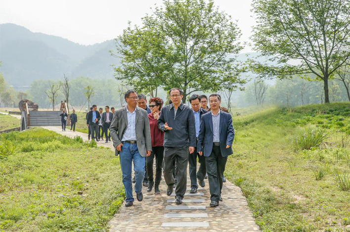

参考行程：
第一天 杭州--遂昌--南尖岩（大柯梯田--独山古寨）
早上驱车约3小时左右来到遂昌，县城用餐。餐后驱车前往清秀的乌溪江畔，休息拍照，这里溪水碧绿，风景绝佳。 休息完毕我们就驱车去大柯梯田，路经乌溪江第一湾。红黄相间的大柯梯田（红色为枫树苗）和浙南土屋，是浙南独特的景色。 接着再去独山古寨，在独山游叶氏宗祠，明隆庆年间的隆庆石牌坊。这里没有旅游团，很宁静。 然后我们返回，换景交盘山公路而上，住宿的地方为南尖岩风景区所在的石笋头村，海拔1200多米，约17点左右到达山上，初拍南尖岩风采。 在这里，要看云海不需再登山，只需耐心地等待。这里的云雾来无踪、去无影，千变万化，让人难以捉摸。 但见层峦起伏，特别是山腰梯田，层层叠叠，在云雾中飘渺，浙南土屋掩映其中，美妙绝伦。难怪是联合国教科文组织挂牌摄影基地呢！

第二天 南尖岩--杭州
早上驱车约3小时左右来到遂昌，县城用餐。餐后驱车前往清秀的乌溪江畔，休息拍照，这里溪水碧绿，风景绝佳。 休息完毕我们就驱车去大柯梯田，路经乌溪江第一湾。红黄相间的大柯梯田（红色为枫树苗）和浙南土屋，是浙南独特的景色。 接着再去独山古寨，在独山游叶氏宗祠，明隆庆年间的隆庆石牌坊。这里没有旅游团，很宁静。 然后我们返回，换景交盘山公路而上，住宿的地方为南尖岩风景区所在的石笋头村，海拔1200多米，约17点左右到达山上，初拍南尖岩风采。 在这里，要看云海不需再登山，只需耐心地等待。这里的云雾来无踪、去无影，千变万化，让人难以捉摸。 但见层峦起伏，特别是山腰梯田，层层叠叠，在云雾中飘渺，浙南土屋掩映其中，美妙绝伦。难怪是联合国教科文组织挂牌摄影基地呢！